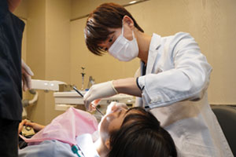

- TOP
- 虫歯治療・根管治療
虫歯治療
虫歯はさまざまな症状を引き起こす
- 歯の溝に黒ずみがある
- 冷たいまたは温かい飲み物・食べ物がしみる
- フロスをすると引っ掛かりがある
- 噛むと痛みを感じる
- 歯の表面が白く濁ってきた
- 歯に穴が空いてしまった
痛みを抑えて再発を防ぐ虫歯治療をご提供します

新宿の歯医者「新宿ルーブル歯科・矯正歯科」では、患者さまの負担を軽減するために、なるべく痛みを抑えた虫歯治療に取り組んでいます。
染め出しや拡大鏡を使用して、虫歯がどの程度進行しているのかを正確に判断した上で治療を進めます。これは、虫歯に汚染されてしまった歯質を取り逃さないようにするためです。また、健康な歯質をできる限り削らずになるべく天然歯を残すことを大切にしています。
虫歯治療は今ある症状を改善することはもちろん、将来の再発をできる限り防ぐことが大切です。当院は10年後、20年後までも見据えた治療を心がけます。
被せ物・詰め物は再発リスクの低い物がお勧め

歯を削った部分に装着する被せ物や詰め物にはさまざまな素材があり、それぞれ耐久性や使用感に大きな違いがあります。例えば、レジンや金属素材は保険適用のためリーズナブルさが特長です。セラミック素材は自費診療ですが、虫歯再発リスクが低く精密な装着で機能性も高く長持ちします。当院では患者さまに、それぞれのメリット・デメリットをしっかりとお伝えした上でお選びいただいています。
根管治療
歯の根を治療し大切な歯を残す根管治療
自分の歯をできる限り残したいとお考えなら、新宿の歯医者「新宿ルーブル歯科・矯正歯科」の根管治療をご検討ください。進行してしまった虫歯の場合、歯科医院によっては抜歯を提案されることも珍しくありません。しかし、当院では歯はなるべく残すべきという考えから、根管治療をご提案しています。
根管治療とは、死んでしまった神経を取り除き、細菌を除去した上で被せ物をする治療法です。重度の虫歯でも歯根を残すことができます。当院では歯根を徹底的に洗浄・消毒して神経の穴を薬剤で詰めることで、虫歯の再発リスクを防ぐことに重点を置いています。
症例に応じて保険でもマイクロスコープとラバーダムを使用
根管治療は「目に見えない細菌との戦い」とも言われ、1回目よりも2回、3回と繰り返すほど治療期間が長くなります。その理由は、歯根の形が細く複雑で肉眼では見えにくく、細菌を取り除くことが難しいためです。
歯を残すための根管治療でも、何度も再発してしまい5回くらい治療を繰り返すことになれば歯の土台となる歯根そのものが耐えられなくなり、抜歯を選択せざるを得なくなります。当院では抜歯という最悪の結果にならないよう、マイクロスコープやラバーダムを使用して丁寧かつ精密な治療を行っています。
ラバーダムを使用して再発を防ぐ
当院の根管治療ではラバーダムを使用します。治療対象となる歯の周りをゴムシートで覆い、唾液に含まれる細菌が根管内へ侵入し感染拡大するのを防ぐためです。物理的に細菌の侵入を遮断するため、根管に膿がたまる「根尖性歯周炎」発生による再治療のリスクを大きく低減できます。
また、根管治療で使用する洗浄・消毒のための薬液が口内の他の部位に付着することや、器具の誤飲なども防げるのがラバーダムのメリットです。
マイクロスコープで精度の高い根管治療を実現
根管は複雑な形状で細く暗いため、肉眼だけでは患部を十分に確認することができません。当院では20倍に拡大できるマイクロスコープを使用して歯根までをしっかり把握しながら治療を進めます。治療部位を鮮明に確認できるため、汚染された神経や歯質を残すことなく取り除くことができます。また、健康な歯質を削り過ぎることがないため、できる限り患者さまの歯を残すことが可能です。治療時間の短縮にもつながることから、マイクロスコープの使用は患者さまの負担軽減にもつながります。